| Pedido | Acomodo | Largo de tela | Diferencia |
|---|---|---|---|
| 6 banderas 50×50 | Derechas, 2 por fila (el sistema) | 1,56 m | — |
| Inclinadas 30° (como 5 banderas) | 1,75 m | +18,3 cm (+11,7 %) | |
| 12 banderas 50×50 | Giro libre (el sistema elige inclinadas) | 3,106 m | — |
| Regla «sin rotar» (el sistema) | 3,134 m | +2,8 cm | |
| 102 banderas 50×50 | PDF del 16/10 (pieza por pieza) | 25,67 m | — |
| Con el patrón (20/10, primera versión) | 24,68 m | −0,99 m (−3,9 %) | |
| Patrón con las tres a 30° (hoy) | 23,45 m | −2,22 m (−8,7 %) | |
| 10 camisetas talle M sólo 0° o 180°: la tela estira hacia los costados | Sin girar | 9,15 m | — |
| Girando 180° | 8,54 m | −0,61 m (−6,7 %) | |
| 40 camisetas talle M · 180° | Motor anterior | 35,15 m | — |
| Hoy (con el patrón) | 34,50 m | −0,65 m (−1,8 %) | |
| Talles mezclados (6 M + 6 2XL + 6 Sfem) · 180° | Hoy | 16,07 m | igual que antes |
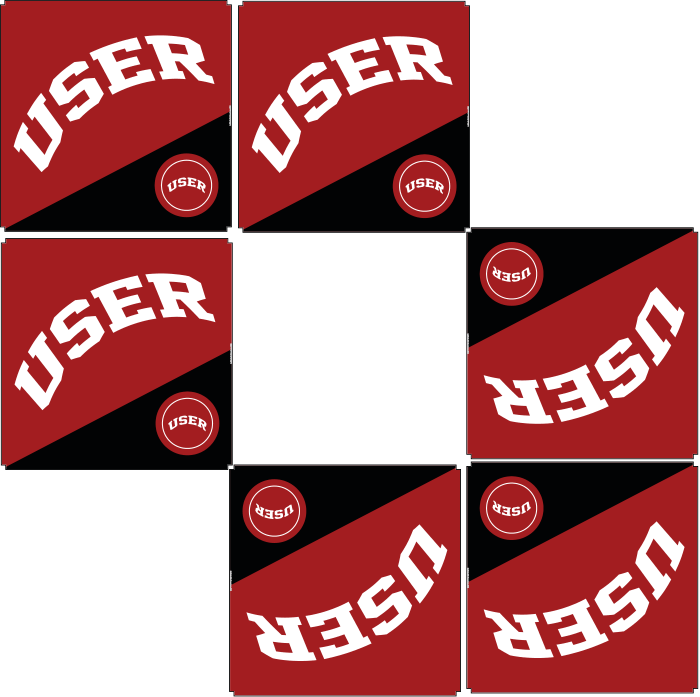
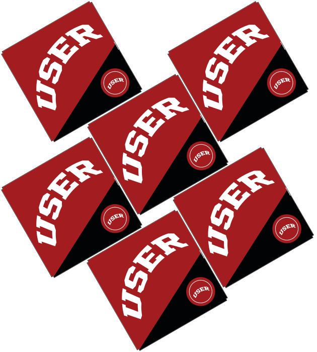
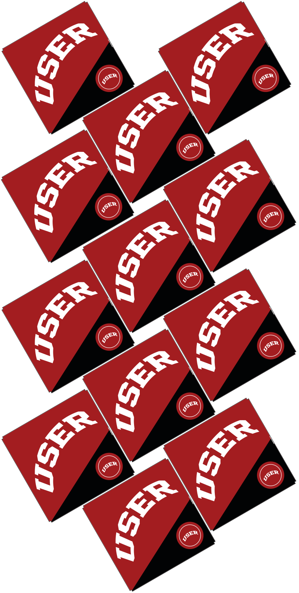
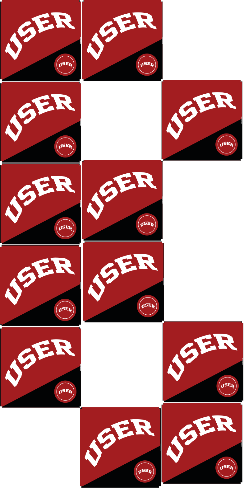
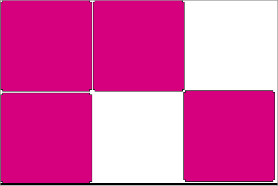
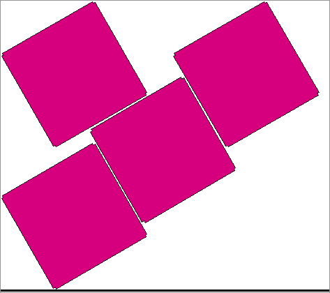
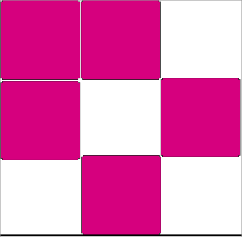
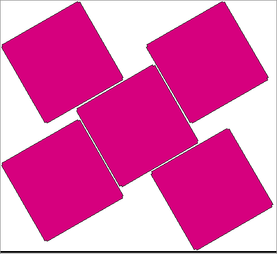
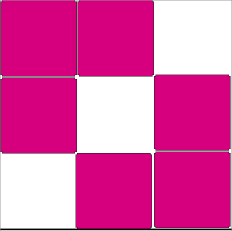
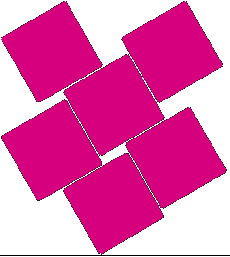
| n | derechas cm | inclinadas cm | gana |
|---|---|---|---|
| 2 | 52 | 52 | derechas |
| 3 | 103,3 | 107,2 | derechas |
| 4 | 104,5 | 138,8 | derechas |
| 5 | 153 | 143,4 | inclinadas |
| 6 | 155,8 | 174,5 | derechas |
| 7 | 204,4 | 206,6 | derechas |
| 8 | 208,4 | 211,2 | derechas |
| 9 | 258,9 | 242,8 | inclinadas |
| 10 | 260,9 | 273,9 | derechas |
| 11 | 309,8 | 279 | inclinadas |
| 12 | 313,4 | 310,6 | inclinadas |
| 13 | 364 | 341,7 | inclinadas |
| 14 | 366 | 346,8 | inclinadas |
| 15 | 416,5 | 378,4 | inclinadas |
| 16 | 418,5 | 409,5 | inclinadas |
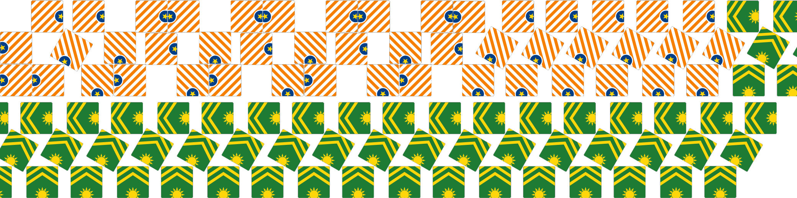
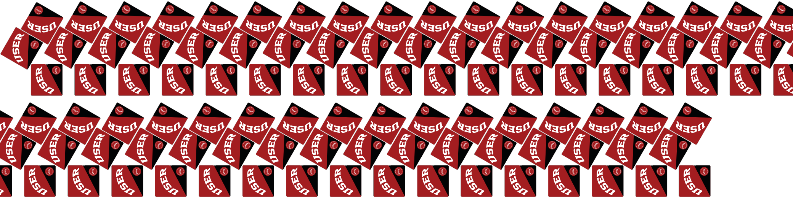
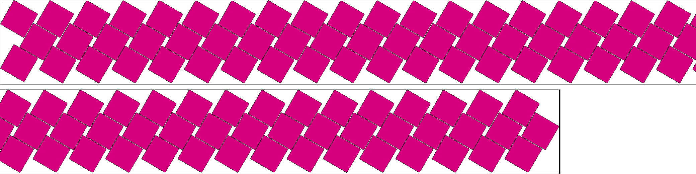
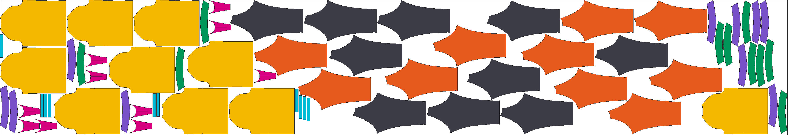
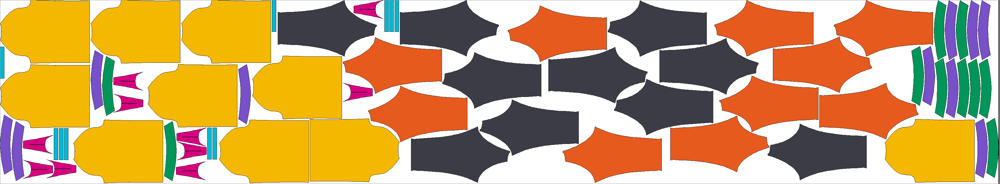
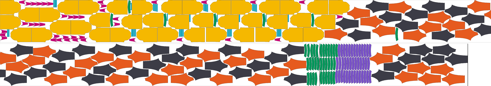
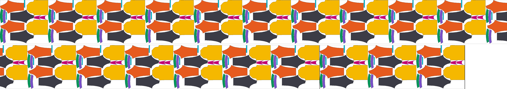
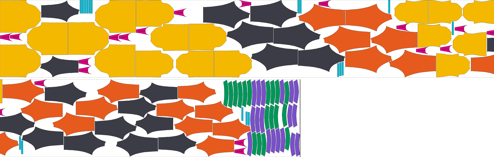